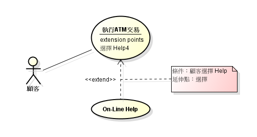

前言
使用案例圖的目的為塑模出系統應該做什麼（What），而在此階段不考慮如何做（How），須由系統的外部來看系統的用途，意為看系統的角度不該由系統內部出發，應由更高層次來辨識系統應該提供的功能。
開始
Use Case 的意思從字面上來看，使用（Use）系統來處理的個案（Case），使用案例圖就可以當作用來描述系統行為的藍圖，繪製時的工作，要從需求分析中找出與系統互動的參與者與使用案例，以及參與者和案例之間的關係，或是使用案例彼此之間的關係。
每個 Use Case 至少會有一個 Actor（演員），可以理解為至少一位參與者（角色），而參與者不一定為人，有可能為其他系統或設備。一個角色可以跟一個以上的使用案例互動，一個使用案例可以與一個以上的角色互動，但使用案例通常不會單獨存在，所以最少會與一個角色互動。
Use Case 為一種表示法，使用橢圓形來表示，可以為靜態或動態的事物，或是為一件工作或一個系統。
對使用案例有點概念後，現在深入了解一下常見的 Actor。常見的 Actor 有使用者、系統或時間。基本上使用者即為人，在使用案例圖中會有哪些人參與，比方顧客、員工、主管…等；系統則是在一些特定情況下，由系統驅動程式來執行某些功能，比方當審核通過時，系統主動發信通知；發信這個使用案例是由系統自動執行，在這個案例裡，參與者就是為 Mail System；如果某個使用案例是透過時間來驅動，那參與者就是 Timer，延伸舉例，剛剛的使用案例是透過系統驅動，如果參與者是時間，案例可以看成『每天五點一到，自動發出信件』，那麼驅動發信的參與者就不為系統，而是因為時間到了才做執行。

如何找出角色？既然 Actor 不一定是人，有可能為系統或時間，我們透過以下問題來找出更明確的 Actor：
- 誰會使用到此系統
- 誰提供資訊
- 誰需要資訊
- 誰可以改變資訊
- 誰可以刪除資訊
在找出使用案例前，先來了解如何替使用案例命名，基本上，準確地為使用案例命名，即可成功地找出使用案例，所以要如何找？前面所提 Use Case Diagram 的目的中有句『須由系統的外部來看系統的用途』就是答案，從使用者的觀點來描述案例，若事件描述不由使用者觀點出發，就不能百分之百的做為使用案例，在系統處理的所有動作中，並非全部動作都能由使用者角度所看到，其實很多事件使用者是看不到的。
一開始可以從事件表開始找，事件表可能會描述得非常細微，在找的過程中，就可以把一些相關的細微事件集合起來，使之成為一個使用案例，在組織化的過程中，也要盡量去避免範圍過於廣泛的使用案例或是太過細微的使用案例，雖然使用案例描述的功能範圍是沒有大小限制，也沒有一定的規則，太過廣泛的範圍會使得使用案例圖失去原本功能，範圍太過細微日後需求變動而使用案例圖又會跟著變動。
認識這兩個符號後，繼續了解關係（Relationship）的知識和繪製使用案例圖。直接繪製一個參與者和使用者案例的關係，關係使用為一條線且沒有箭頭，表示為雙向關係，稱為連結線。
在使用案例的關係中最常使用的兩種為：Include、Extend。Include（包含）關係表示使用案例會包含其他使用案例，舉例：在風險分析與評估之間的關係為『風險分析包含著評估』，所以繪製風險分析使用者案例與評估使用者案例的關係可以使用 Include Relationship，包含關係使用虛線，箭頭指向被包含的 Use Case。
繼續繪製一個買菜的使用者案例：有個家庭主婦會去買菜，買菜的過程中包含兩件事情，一個為挑選新鮮的菜，一個為結帳。現在很清楚知道有個參與者為家庭主婦，家庭主婦會做買菜這件事，而買菜這件事裡面包含挑選新鮮的菜和結帳兩件事。
包含關係的好處為利用 Include Relationship 來降低重複描述同一個案例，若許多案例都共同擁有同一種功能，則可以把該功能獨立出來，在讓其他使用案例去包含該案例。練習圖書館借還書案例，圖書館管理員在將書借出時需要讀碼來記錄被借出的書，而還書時也需要讀碼來記錄歸還的書，既然讀碼為重複的動作，就可以將其獨立成一個使用案例，在讓借書及還書包含此案例。
繼續練習請假系統的使用案例圖，經了解需求如下：
- 員工可以向公司內的直屬主管請假，直屬主管需要核准後，員工方能請假成功
- 員工必須有設定代理人才能請假
- 主管可以查詢部門內當日之請假狀況
- 員工可以查詢自己的請假狀況，包括年度共休幾天，特休剩餘多少天數等
先找出請假系統內的參與者：員工、主管、代理人
再分析 Use Case
- 員工可以請假
- 主管可以審核請假，請假包含核准、不核准
- 請假必須設定代理人
- 員工及主管皆可查詢請假狀況
現在可以繪出簡易的 Use Case Diagram
關於ATM的案例，顧客可以使用ATM來提款、轉帳、查詢餘額和 HELP，而 ATM 連接著銀行主機，當提款或轉帳時餘額會更新，所以提款和轉帳還包含餘額更新。在這個使用案例圖裡面 ATM 使用了方框表示，方框在 UML 裡代表一個系統，用來表示系統的邊界，一般來說若系統不與其他系統互動時（案例圖內只有一個系統），通常會省略。
上述介紹了 Include Relationship（包含關係），與他相反的還有一個 Extend Relationship（延伸關係），包含和延伸容易混淆，而延伸的箭頭方向也是時常混淆的地方。假設有兩個案例分別為案例 A 和案例 B，其中使用案例 B 延伸使用案例 A，就可以繪出一條帶有箭頭的虛線，而箭頭指向案例 A。
但是什麼是延伸？今天使用案例 A 時，在某些情況（條件）下，觸發使用案例 B，所以並非每次使用案例 A 就會使用案例 B，而是在特定的條件下，我們就可以在被延伸的案例 A 的下方寫上延伸點（Extension Point）做為條件描述。
來看看下訂單的案例，有個參與者為管理者，管理者可以執行訂貨，還可以執行下訂單，當沒有存貨時，系統會自動訂貨，不用讓管理者直接執行訂貨。來看使用者案例圖
來看另一個 ATM 的案例，顧客使用自動提款機執行交易，顧客可以選擇線上輔助說明來查看相關操作明細，該段描述了執行 ATM 交易和選擇線上輔助說明兩個使用案例，我們可以繪出該需求的案例圖為

一般化關係與物件導向語言一般化關係為類似的概念，可應用在角色的一般化與使用案例的一般化；在訂票系統內，訂票的方式電話訂票及網路訂票兩種，而這兩種的本質皆為訂票，所以可以使用一般化塑模該案例，在父使用案例（訂票）上加上 <<essential>> 表示為一般化關係。
反思一下前面的 ATM 案例，假如 ATM 系統有『執行ATM交易』使用案例，交易的服務項目包含提款、轉帳及查詢餘額，該案例可使用一般化關係來塑模。
角色的一般化如果以繼承的角度來看，會更快的理解；假設有兩位餐與者分別為甲和乙，從需求分析發現，甲的使用案例有兩個，而乙的使用案例有三個，其中有兩個是參與甲的使用案例（像繼承吧！），所以乙延伸了甲，用一般化關係來塑模
結語
使用案例圖的相關方法已經紀錄完畢，雖然剛開始在思考使用案例時會很抽象，經過多個不同的需求分析練習，就能快速提取出使用案例和參與者，若還是太抽象，常把細節提取出或者提取範圍太過廣，後續的活動圖和情節可幫助將觀念離情，這邊先透漏活動圖的概念，就是將使用案例的實作方法（或許說是流程更好）繪製出，將繪製出的活動圖打包成一個使用案例，從細部來看活動圖，從高層次角度來看使用案例，這樣就很清楚了。
Reference
書籍：UML 物件導向系統分析與設計